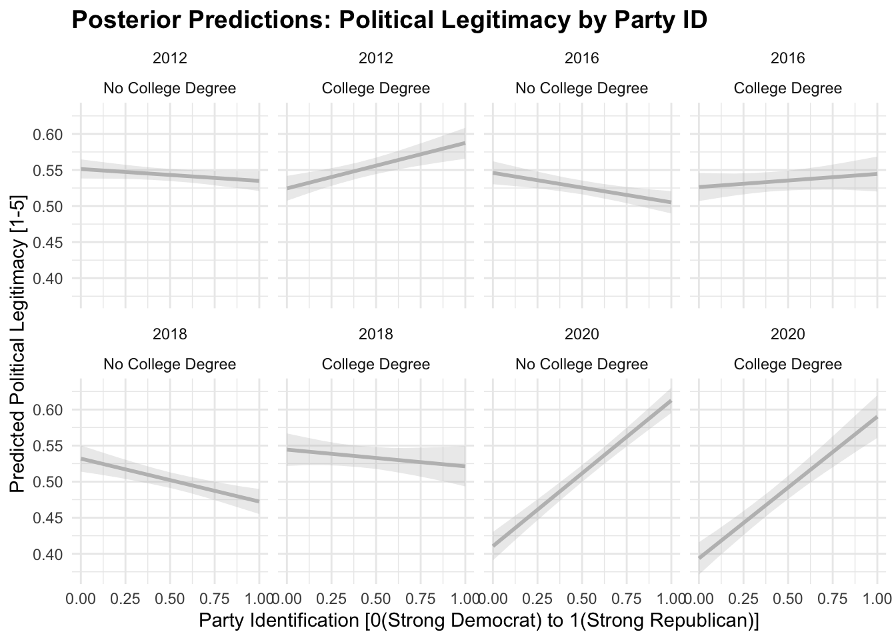

Chapter 3 The Institute for the Study of Citizens and Politics (ISCAP) Panel
These data are downloaded from data verse (Hopkins and Mutz 2022). The data include the following variables.
Gender(1 = Female)College(1 = College degree or higher)Nonwhite(1 = Non-white)Party Identification(7-point scale,7 = “Strong Republican”)Ideology(7-point scale, 7 = “Extremely Conservative”)Political System Legitimacy(4-item battery, 5 point Agree - Disagree scale)
- “I would rather live under our system of government than any other that I can think of”
- “At present I feel very critical of our political system”
- “The system does a good job representing the interests of people like me”
- “Feel critical of our political system” (\(\alpha \approx 0.6\), see below for exact estimates)
3.1 Data
## identifier party_identification_2012 ideology_2012 female_2012 college_2012
## 1 353 3 4 0 0
## 2 6134 6 4 0 0
## 3 6163 3 4 0 0
## 4 7087 1 1 1 1
## 5 7526 3 1 0 0
## 6 7693 6 5 1 0
## nonwhite_2012 live_our_government_2012 system_needs_changes_2012
## 1 1 3 3
## 2 1 3 3
## 3 0 3 3
## 4 1 2 2
## 5 0 3 1
## 6 0 5 2
## system_represents_interests_2012 critical_of_system_2012 wave_year_2012
## 1 3 2 2012
## 2 3 3 2012
## 3 3 3 2012
## 4 2 2 2012
## 5 1 1 2012
## 6 5 2 2012
## wave_year_2016 party_identification_2016 ideology_2016 female_2016
## 1 2016 2 4 0
## 2 2016 5 4 0
## 3 NA NA NA NA
## 4 NA NA NA NA
## 5 2016 4 1 0
## 6 2016 5 6 1
## college_2016 nonwhite_2016 live_our_government_2016 system_needs_changes_2016
## 1 0 1 2 2
## 2 0 1 4 2
## 3 NA NA NA NA
## 4 NA NA NA NA
## 5 0 0 1 1
## 6 0 0 5 3
## system_represents_interests_2016 critical_of_system_2016
## 1 2 2
## 2 3 2
## 3 NA NA
## 4 NA NA
## 5 1 1
## 6 5 2
## party_identification_2018 wave_year_2018 ideology_2018 female_2018
## 1 NA NA NA NA
## 2 6 2018 4 0
## 3 NA NA NA NA
## 4 NA NA NA NA
## 5 4 2018 1 0
## 6 NA NA NA NA
## college_2018 nonwhite_2018 live_our_government_2018 system_needs_changes_2018
## 1 NA NA NA NA
## 2 0 1 4 2
## 3 NA NA NA NA
## 4 NA NA NA NA
## 5 0 0 3 1
## 6 NA NA NA NA
## system_represents_interests_2018 critical_of_system_2018 wave_year_2020
## 1 NA NA NA
## 2 3 3 NA
## 3 NA NA NA
## 4 NA NA NA
## 5 1 1 NA
## 6 NA NA NA
## party_identification_2020 ideology_2020 female_2020 college_2020
## 1 NA NA NA NA
## 2 NA NA NA NA
## 3 NA NA NA NA
## 4 NA NA NA NA
## 5 NA NA NA NA
## 6 NA NA NA NA
## nonwhite_2020 live_our_government_2020 system_needs_changes_2020
## 1 NA NA NA
## 2 NA NA NA
## 3 NA NA NA
## 4 NA NA NA
## 5 NA NA NA
## 6 NA NA NA
## system_represents_interests_2020 critical_of_system_2020
## 1 NA NA
## 2 NA NA
## 3 NA NA
## 4 NA NA
## 5 NA NA
## 6 NA NA3.2 Legitimacy Scale
The political legitimacy scale is composed of four items.
##
## Reliability analysis
## Call: psych::alpha(x = select(upenn, live_our_government_2012, critical_of_system_2012,
## system_needs_changes_2012, system_represents_interests_2012))
##
## raw_alpha std.alpha G6(smc) average_r S/N ase mean sd median_r
## 0.62 0.62 0.65 0.29 1.7 0.013 3.2 0.7 0.17
##
## 95% confidence boundaries
## lower alpha upper
## Feldt 0.6 0.62 0.64
## Duhachek 0.6 0.62 0.65
##
## Reliability if an item is dropped:
## raw_alpha std.alpha G6(smc) average_r S/N
## live_our_government_2012 0.54 0.54 0.48 0.28 1.2
## critical_of_system_2012 0.58 0.59 0.57 0.32 1.4
## system_needs_changes_2012 0.57 0.58 0.56 0.31 1.4
## system_represents_interests_2012 0.51 0.50 0.45 0.25 1.0
## alpha se var.r med.r
## live_our_government_2012 0.016 0.034 0.18
## critical_of_system_2012 0.015 0.080 0.18
## system_needs_changes_2012 0.015 0.082 0.17
## system_represents_interests_2012 0.016 0.044 0.13
##
## Item statistics
## n raw.r std.r r.cor r.drop mean sd
## live_our_government_2012 2549 0.68 0.70 0.60 0.42 4.3 0.96
## critical_of_system_2012 2545 0.67 0.66 0.48 0.36 2.5 1.07
## system_needs_changes_2012 2548 0.67 0.66 0.48 0.38 2.2 1.01
## system_represents_interests_2012 2538 0.72 0.73 0.64 0.45 3.8 1.02
##
## Non missing response frequency for each item
## 1 2 3 4 5 miss
## live_our_government_2012 0.01 0.04 0.15 0.25 0.54 0.02
## critical_of_system_2012 0.19 0.34 0.30 0.11 0.05 0.02
## system_needs_changes_2012 0.27 0.44 0.18 0.08 0.03 0.02
## system_represents_interests_2012 0.02 0.09 0.21 0.38 0.29 0.03## raw_alpha std.alpha G6(smc) average_r
## live_our_government_2016 0.5472277 0.5477265 0.4807009 0.2875889
## critical_of_system_2016 0.5909525 0.5910350 0.5710011 0.3251143
## system_needs_changes_2016 0.5800910 0.5901880 0.5701145 0.3243462
## system_represents_interests_2016 0.5185837 0.5122900 0.4555590 0.2593322
## S/N alpha se var.r med.r
## live_our_government_2016 1.211052 0.01544822 0.03082119 0.1887831
## critical_of_system_2016 1.445197 0.01415070 0.07684809 0.1887831
## system_needs_changes_2016 1.440144 0.01474676 0.07704931 0.1836971
## system_represents_interests_2016 1.050399 0.01621489 0.04000682 0.1452460## raw_alpha std.alpha G6(smc) average_r
## live_our_government_2018 0.5439546 0.5463639 0.4994770 0.2864635
## critical_of_system_2018 0.5328013 0.5328980 0.5237679 0.2755128
## system_needs_changes_2018 0.5448513 0.5560505 0.5409201 0.2945341
## system_represents_interests_2018 0.4932378 0.4794167 0.4558539 0.2348738
## S/N alpha se var.r med.r
## live_our_government_2018 1.204410 0.01566761 0.04990861 0.1829792
## critical_of_system_2018 1.140860 0.01604274 0.08770000 0.1335673
## system_needs_changes_2018 1.252509 0.01586875 0.07987501 0.1829792
## system_represents_interests_2018 0.920922 0.01693038 0.07114886 0.0847147## raw_alpha std.alpha G6(smc) average_r
## live_our_government_2020 0.6321628 0.6364805 0.5550060 0.3685386
## critical_of_system_2020 0.6704717 0.6689568 0.6244874 0.4024802
## system_needs_changes_2020 0.6442895 0.6465854 0.6115880 0.3788226
## system_represents_interests_2020 0.5848126 0.5833031 0.5133185 0.3181548
## S/N alpha se var.r med.r
## live_our_government_2020 1.750884 0.01261402 0.01436718 0.3095550
## critical_of_system_2020 2.020754 0.01121128 0.04625078 0.3095550
## system_needs_changes_2020 1.829538 0.01226564 0.05657014 0.2895966
## system_represents_interests_2020 1.399826 0.01412638 0.02724593 0.2495074The data are structured in wide format with variables followed with wave numbers (e.g., _2012). This isn’t ideal for panel analysis. The dplyr package includes pivot_longer() function to reshape the data from wide to long format.
## The number of rows in the wide format data is: 2606## The complete data has 671 complete cases.## There are 1935 rows with missing data.upenn_long <- upenn %>%
pivot_longer(
cols = -c(identifier),
names_to = c(".value", "wave"),
names_pattern = "(.+)_(\\d+)$" # Regex to extract _2012, etc part
) %>%
arrange(identifier, wave) |>
mutate(
party_identification = (party_identification - 1)/6,
ideology = (ideology - 1) /6
)
head(upenn_long)## # A tibble: 6 × 13
## identifier wave party_identification ideology female college nonwhite
## <dbl> <chr> <dbl> <dbl> <dbl> <dbl> <dbl>
## 1 353 2012 0.333 0.5 0 0 1
## 2 353 2016 0.167 0.5 0 0 1
## 3 353 2018 NA NA NA NA NA
## 4 353 2020 NA NA NA NA NA
## 5 6134 2012 0.833 0.5 0 0 1
## 6 6134 2016 0.667 0.5 0 0 1
## # ℹ 6 more variables: live_our_government <dbl>, system_needs_changes <dbl>,
## # system_represents_interests <dbl>, critical_of_system <dbl>,
## # wave_year <dbl>, political_legitimacy <dbl>legitimacy_data = upenn_long |>
dplyr::select(identifier, wave,
political_legitimacy,
live_our_government,
critical_of_system,
system_needs_changes,
system_represents_interests)
miss_var_summary(legitimacy_data |> select(-c(identifier, wave)))## # A tibble: 5 × 3
## variable n_miss pct_miss
## <chr> <int> <num>
## 1 system_represents_interests 4015 38.5
## 2 critical_of_system 4002 38.4
## 3 system_needs_changes 3999 38.4
## 4 live_our_government 3997 38.3
## 5 political_legitimacy 3982 38.2Below I display the missing data patterns across all variables and respondents in the dataset. Dark cells indicate missing values.
3.3 Missing Data by Wave
## # A tibble: 24 × 4
## # Groups: wave [4]
## wave variable n_miss pct_miss
## <chr> <chr> <int> <num>
## 1 2012 system_represents_interests 68 2.61
## 2 2012 critical_of_system 61 2.34
## 3 2012 system_needs_changes 58 2.23
## 4 2012 live_our_government 57 2.19
## 5 2012 political_legitimacy 52 2.00
## 6 2012 identifier 0 0
## 7 2016 critical_of_system 935 35.9
## 8 2016 system_needs_changes 934 35.8
## 9 2016 live_our_government 933 35.8
## 10 2016 system_represents_interests 933 35.8
## # ℹ 14 more rows3.4 Autocorrelation
Ignoring time dependence, and just fitting an OLS regression:
##
## Call:
## lm(formula = political_legitimacy ~ female + college + party_identification,
## data = upenn_long)
##
## Residuals:
## Min 1Q Median 3Q Max
## -0.54523 -0.09803 -0.01614 0.10469 0.48637
##
## Coefficients:
## Estimate Std. Error t value Pr(>|t|)
## (Intercept) 0.513626 0.004935 104.068 < 2e-16 ***
## female 0.002517 0.004457 0.565 0.572
## college 0.004165 0.004676 0.891 0.373
## party_identification 0.029087 0.006173 4.712 2.51e-06 ***
## ---
## Signif. codes: 0 '***' 0.001 '**' 0.01 '*' 0.05 '.' 0.1 ' ' 1
##
## Residual standard error: 0.1777 on 6416 degrees of freedom
## (4004 observations deleted due to missingness)
## Multiple R-squared: 0.00347, Adjusted R-squared: 0.003004
## F-statistic: 7.446 on 3 and 6416 DF, p-value: 5.643e-053.5 Unit Fixed Effects
##
## Call:
## lm(formula = within_legitimacy ~ within_female + within_college +
## within_party, data = data_panel)
##
## Residuals:
## Min 1Q Median 3Q Max
## -0.59376 -0.04764 -0.00001 0.04838 0.54368
##
## Coefficients:
## Estimate Std. Error t value Pr(>|t|)
## (Intercept) 0.000006212 0.001202093 0.005 0.9959
## within_female 0.075541356 0.072075028 1.048 0.2946
## within_college -0.003935012 0.018213456 -0.216 0.8290
## within_party 0.018180330 0.011032306 1.648 0.0994 .
## ---
## Signif. codes: 0 '***' 0.001 '**' 0.01 '*' 0.05 '.' 0.1 ' ' 1
##
## Residual standard error: 0.09632 on 6416 degrees of freedom
## (4004 observations deleted due to missingness)
## Multiple R-squared: 0.0005985, Adjusted R-squared: 0.0001312
## F-statistic: 1.281 on 3 and 6416 DF, p-value: 0.2791Compare this to the one-way fixed effect model in the plm package.
## Oneway (individual) effect Within Model
##
## Call:
## plm(formula = political_legitimacy ~ female + college + party_identification,
## data = data_panel, effect = "individual", model = "within")
##
## Unbalanced Panel: n = 2581, T = 1-4, N = 6420
##
## Residuals:
## Min. 1st Qu. Median 3rd Qu. Max.
## -0.593750 -0.047665 0.000000 0.048397 0.543695
##
## Coefficients:
## Estimate Std. Error t-value Pr(>|t|)
## female 0.0756309 0.0931678 0.8118 0.4170
## college -0.0040813 0.0238395 -0.1712 0.8641
## party_identification 0.0182587 0.0142855 1.2781 0.2013
##
## Total Sum of Squares: 59.459
## Residual Sum of Squares: 59.424
## R-Squared: 0.0006016
## Adj. R-Squared: -0.67235
## F-statistic: 0.76971 on 3 and 3836 DF, p-value: 0.510853.6 Fitting the Two Way Fixed Effects
We could also demean the variable by wave to account for time fixed effects. Here is the plm output.
## Twoways effects Within Model
##
## Call:
## plm(formula = political_legitimacy ~ female + college + party_identification,
## data = data_panel, effect = "twoways", model = "within")
##
## Unbalanced Panel: n = 2581, T = 1-4, N = 6420
##
## Residuals:
## Min. 1st Qu. Median 3rd Qu. Max.
## -0.572309 -0.049959 0.000000 0.047297 0.522073
##
## Coefficients:
## Estimate Std. Error t-value Pr(>|t|)
## female 0.059346 0.092007 0.6450 0.5190
## college 0.013463 0.023600 0.5705 0.5684
## party_identification 0.024252 0.014117 1.7179 0.0859 .
## ---
## Signif. codes: 0 '***' 0.001 '**' 0.01 '*' 0.05 '.' 0.1 ' ' 1
##
## Total Sum of Squares: 57.929
## Residual Sum of Squares: 57.871
## R-Squared: 0.0010027
## Adj. R-Squared: -0.67299
## F-statistic: 1.28244 on 3 and 3833 DF, p-value: 0.27859Partisanship is stable, but it should color responses in election year. If we extend the two way fixed effect model to include interactions between wave and party_identification, we can capture some of this time varying effect.
## Oneway (individual) effect Within Model
##
## Call:
## plm(formula = political_legitimacy ~ female + college + party_identification:as.factor(wave) +
## as.factor(wave), data = data_panel, effect = "individual",
## model = "within")
##
## Unbalanced Panel: n = 2581, T = 1-4, N = 6420
##
## Residuals:
## Min. 1st Qu. Median 3rd Qu. Max.
## -0.502868 -0.048931 0.000000 0.048222 0.489013
##
## Coefficients:
## Estimate Std. Error t-value
## female 0.0449683 0.0879085 0.5115
## college 0.0145374 0.0225529 0.6446
## as.factor(wave)2016 -0.0043890 0.0067595 -0.6493
## as.factor(wave)2018 -0.0082597 0.0076189 -1.0841
## as.factor(wave)2020 -0.1413772 0.0081197 -17.4116
## party_identification:as.factor(wave)2012 -0.0052869 0.0152955 -0.3457
## party_identification:as.factor(wave)2016 -0.0365867 0.0151667 -2.4123
## party_identification:as.factor(wave)2018 -0.0624392 0.0163717 -3.8138
## party_identification:as.factor(wave)2020 0.1926144 0.0162397 11.8607
## Pr(>|t|)
## female 0.609005
## college 0.519231
## as.factor(wave)2016 0.516181
## as.factor(wave)2018 0.278385
## as.factor(wave)2020 < 0.00000000000000022 ***
## party_identification:as.factor(wave)2012 0.729625
## party_identification:as.factor(wave)2016 0.015899 *
## party_identification:as.factor(wave)2018 0.000139 ***
## party_identification:as.factor(wave)2020 < 0.00000000000000022 ***
## ---
## Signif. codes: 0 '***' 0.001 '**' 0.01 '*' 0.05 '.' 0.1 ' ' 1
##
## Total Sum of Squares: 59.459
## Residual Sum of Squares: 52.765
## R-Squared: 0.11258
## Adj. R-Squared: -0.4873
## F-statistic: 53.9862 on 9 and 3830 DF, p-value: < 0.0000000000000002223.7 Fitting the Random Intercept Model
Let’s fit a variety of random effects models, using brms.
## Running /Library/Frameworks/R.framework/Resources/bin/R CMD SHLIB foo.c
## using C compiler: ‘Apple clang version 17.0.0 (clang-1700.4.4.1)’
## using SDK: ‘’
## clang -arch arm64 -I"/Library/Frameworks/R.framework/Resources/include" -DNDEBUG -I"/Users/Chris/Library/Caches/org.R-project.R/R/renv/cache/v5/macos/R-4.5/aarch64-apple-darwin20/Rcpp/1.1.0/0d3d8867aa41b0d9ad113b50c169ecb2/Rcpp/include/" -I"/Users/Chris/Library/Caches/org.R-project.R/R/renv/library/crossLagR-3ffdb125/macos/R-4.5/aarch64-apple-darwin20/RcppEigen/include/" -I"/Users/Chris/Library/Caches/org.R-project.R/R/renv/library/crossLagR-3ffdb125/macos/R-4.5/aarch64-apple-darwin20/RcppEigen/include/unsupported" -I"/Users/Chris/Library/Caches/org.R-project.R/R/renv/library/crossLagR-3ffdb125/macos/R-4.5/aarch64-apple-darwin20/BH/include" -I"/Users/Chris/Library/Caches/org.R-project.R/R/renv/library/crossLagR-3ffdb125/macos/R-4.5/aarch64-apple-darwin20/StanHeaders/include/src/" -I"/Users/Chris/Library/Caches/org.R-project.R/R/renv/library/crossLagR-3ffdb125/macos/R-4.5/aarch64-apple-darwin20/StanHeaders/include/" -I"/Users/Chris/Library/Caches/org.R-project.R/R/renv/library/crossLagR-3ffdb125/macos/R-4.5/aarch64-apple-darwin20/RcppParallel/include/" -I"/Users/Chris/Library/Caches/org.R-project.R/R/renv/library/crossLagR-3ffdb125/macos/R-4.5/aarch64-apple-darwin20/rstan/include" -DEIGEN_NO_DEBUG -DBOOST_DISABLE_ASSERTS -DBOOST_PENDING_INTEGER_LOG2_HPP -DSTAN_THREADS -DUSE_STANC3 -DSTRICT_R_HEADERS -DBOOST_PHOENIX_NO_VARIADIC_EXPRESSION -D_HAS_AUTO_PTR_ETC=0 -include '/Users/Chris/Library/Caches/org.R-project.R/R/renv/library/crossLagR-3ffdb125/macos/R-4.5/aarch64-apple-darwin20/StanHeaders/include/stan/math/prim/fun/Eigen.hpp' -D_REENTRANT -DRCPP_PARALLEL_USE_TBB=1 -I/opt/R/arm64/include -fPIC -falign-functions=64 -Wall -g -O2 -c foo.c -o foo.o
## In file included from <built-in>:1:
## In file included from /Users/Chris/Library/Caches/org.R-project.R/R/renv/library/crossLagR-3ffdb125/macos/R-4.5/aarch64-apple-darwin20/StanHeaders/include/stan/math/prim/fun/Eigen.hpp:22:
## In file included from /Users/Chris/Library/Caches/org.R-project.R/R/renv/library/crossLagR-3ffdb125/macos/R-4.5/aarch64-apple-darwin20/RcppEigen/include/Eigen/Dense:1:
## In file included from /Users/Chris/Library/Caches/org.R-project.R/R/renv/library/crossLagR-3ffdb125/macos/R-4.5/aarch64-apple-darwin20/RcppEigen/include/Eigen/Core:19:
## /Users/Chris/Library/Caches/org.R-project.R/R/renv/library/crossLagR-3ffdb125/macos/R-4.5/aarch64-apple-darwin20/RcppEigen/include/Eigen/src/Core/util/Macros.h:679:10: fatal error: 'cmath' file not found
## 679 | #include <cmath>
## | ^~~~~~~
## 1 error generated.
## make: *** [foo.o] Error 1
##
## Call:
## lm(formula = political_legitimacy ~ female + college + party_identification,
## data = filter(data_panel, wave == 2012))
##
## Residuals:
## Min 1Q Median 3Q Max
## -0.55668 -0.10060 0.00582 0.10195 0.46938
##
## Coefficients:
## Estimate Std. Error t value Pr(>|t|)
## (Intercept) 0.530615 0.007600 69.822 <0.0000000000000002 ***
## female 0.007481 0.006922 1.081 0.2799
## college 0.008614 0.007245 1.189 0.2346
## party_identification 0.018586 0.009693 1.917 0.0553 .
## ---
## Signif. codes: 0 '***' 0.001 '**' 0.01 '*' 0.05 '.' 0.1 ' ' 1
##
## Residual standard error: 0.1741 on 2550 degrees of freedom
## (52 observations deleted due to missingness)
## Multiple R-squared: 0.002167, Adjusted R-squared: 0.0009932
## F-statistic: 1.846 on 3 and 2550 DF, p-value: 0.1367##
## Call:
## lm(formula = political_legitimacy ~ female + college + party_identification,
## data = filter(data_panel, wave == 2016))
##
## Residuals:
## Min 1Q Median 3Q Max
## -0.53442 -0.09327 -0.02270 0.09836 0.47730
##
## Coefficients:
## Estimate Std. Error t value Pr(>|t|)
## (Intercept) 0.533942 0.009439 56.570 <0.0000000000000002 ***
## female 0.002062 0.008518 0.242 0.809
## college 0.002355 0.008962 0.263 0.793
## party_identification -0.011237 0.011755 -0.956 0.339
## ---
## Signif. codes: 0 '***' 0.001 '**' 0.01 '*' 0.05 '.' 0.1 ' ' 1
##
## Residual standard error: 0.1735 on 1671 degrees of freedom
## (931 observations deleted due to missingness)
## Multiple R-squared: 0.0006866, Adjusted R-squared: -0.001107
## F-statistic: 0.3827 on 3 and 1671 DF, p-value: 0.7655##
## Call:
## lm(formula = political_legitimacy ~ female + college + party_identification,
## data = filter(data_panel, wave == 2018))
##
## Residuals:
## Min 1Q Median 3Q Max
## -0.55396 -0.09222 0.00245 0.10279 0.51138
##
## Coefficients:
## Estimate Std. Error t value Pr(>|t|)
## (Intercept) 0.530431 0.010888 48.719 < 0.0000000000000002 ***
## female 0.007514 0.009727 0.772 0.439986
## college 0.023527 0.010213 2.304 0.021409 *
## party_identification -0.049323 0.013551 -3.640 0.000284 ***
## ---
## Signif. codes: 0 '***' 0.001 '**' 0.01 '*' 0.05 '.' 0.1 ' ' 1
##
## Residual standard error: 0.1675 on 1197 degrees of freedom
## (1405 observations deleted due to missingness)
## Multiple R-squared: 0.01823, Adjusted R-squared: 0.01577
## F-statistic: 7.407 on 3 and 1197 DF, p-value: 0.00006438##
## Call:
## lm(formula = political_legitimacy ~ female + college + party_identification,
## data = filter(data_panel, wave == 2020))
##
## Residuals:
## Min 1Q Median 3Q Max
## -0.60768 -0.10768 0.00928 0.12049 0.46185
##
## Coefficients:
## Estimate Std. Error t value Pr(>|t|)
## (Intercept) 0.42025 0.01311 32.063 <0.0000000000000002 ***
## female -0.02117 0.01172 -1.806 0.0712 .
## college -0.01969 0.01233 -1.598 0.1104
## party_identification 0.20860 0.01581 13.193 <0.0000000000000002 ***
## ---
## Signif. codes: 0 '***' 0.001 '**' 0.01 '*' 0.05 '.' 0.1 ' ' 1
##
## Residual standard error: 0.1833 on 986 degrees of freedom
## (1616 observations deleted due to missingness)
## Multiple R-squared: 0.1656, Adjusted R-squared: 0.1631
## F-statistic: 65.24 on 3 and 986 DF, p-value: < 0.00000000000000022An alternative way to do this is to specify a random intercept for both wave and identifier, with random coefficients for partisanship and wave. The way it is currently specified is the wave variable is fixed, all observations pull around a common value. This now captures heterogeneity in the alignment of partisanship and legitimacy over time.
\[\begin{eqnarray} y_{it}=b_{0,i}+b_{1,i} x_{it}+ \sum_{t=2012}^{2020}\omega_{1,t} d_{t} + \sum_{t=2012}^{2020}\omega_{2,t} d_{t} x_{it} + e_{it}\\ b_{0,i} \sim N(b_0, \sigma_0^2)\\ b_{1,i} \sim N(b_1, \sigma_1^2) \\ \omega_{1,t} \sim N (\omega_1, \sigma_{\omega_1}^2) \\ \omega_{2,t} \sim N (\omega_2, \sigma_{\omega_2}^2) \\ \end{eqnarray}\]
## Running /Library/Frameworks/R.framework/Resources/bin/R CMD SHLIB foo.c
## using C compiler: ‘Apple clang version 17.0.0 (clang-1700.4.4.1)’
## using SDK: ‘’
## clang -arch arm64 -I"/Library/Frameworks/R.framework/Resources/include" -DNDEBUG -I"/Users/Chris/Library/Caches/org.R-project.R/R/renv/cache/v5/macos/R-4.5/aarch64-apple-darwin20/Rcpp/1.1.0/0d3d8867aa41b0d9ad113b50c169ecb2/Rcpp/include/" -I"/Users/Chris/Library/Caches/org.R-project.R/R/renv/library/crossLagR-3ffdb125/macos/R-4.5/aarch64-apple-darwin20/RcppEigen/include/" -I"/Users/Chris/Library/Caches/org.R-project.R/R/renv/library/crossLagR-3ffdb125/macos/R-4.5/aarch64-apple-darwin20/RcppEigen/include/unsupported" -I"/Users/Chris/Library/Caches/org.R-project.R/R/renv/library/crossLagR-3ffdb125/macos/R-4.5/aarch64-apple-darwin20/BH/include" -I"/Users/Chris/Library/Caches/org.R-project.R/R/renv/library/crossLagR-3ffdb125/macos/R-4.5/aarch64-apple-darwin20/StanHeaders/include/src/" -I"/Users/Chris/Library/Caches/org.R-project.R/R/renv/library/crossLagR-3ffdb125/macos/R-4.5/aarch64-apple-darwin20/StanHeaders/include/" -I"/Users/Chris/Library/Caches/org.R-project.R/R/renv/library/crossLagR-3ffdb125/macos/R-4.5/aarch64-apple-darwin20/RcppParallel/include/" -I"/Users/Chris/Library/Caches/org.R-project.R/R/renv/library/crossLagR-3ffdb125/macos/R-4.5/aarch64-apple-darwin20/rstan/include" -DEIGEN_NO_DEBUG -DBOOST_DISABLE_ASSERTS -DBOOST_PENDING_INTEGER_LOG2_HPP -DSTAN_THREADS -DUSE_STANC3 -DSTRICT_R_HEADERS -DBOOST_PHOENIX_NO_VARIADIC_EXPRESSION -D_HAS_AUTO_PTR_ETC=0 -include '/Users/Chris/Library/Caches/org.R-project.R/R/renv/library/crossLagR-3ffdb125/macos/R-4.5/aarch64-apple-darwin20/StanHeaders/include/stan/math/prim/fun/Eigen.hpp' -D_REENTRANT -DRCPP_PARALLEL_USE_TBB=1 -I/opt/R/arm64/include -fPIC -falign-functions=64 -Wall -g -O2 -c foo.c -o foo.o
## In file included from <built-in>:1:
## In file included from /Users/Chris/Library/Caches/org.R-project.R/R/renv/library/crossLagR-3ffdb125/macos/R-4.5/aarch64-apple-darwin20/StanHeaders/include/stan/math/prim/fun/Eigen.hpp:22:
## In file included from /Users/Chris/Library/Caches/org.R-project.R/R/renv/library/crossLagR-3ffdb125/macos/R-4.5/aarch64-apple-darwin20/RcppEigen/include/Eigen/Dense:1:
## In file included from /Users/Chris/Library/Caches/org.R-project.R/R/renv/library/crossLagR-3ffdb125/macos/R-4.5/aarch64-apple-darwin20/RcppEigen/include/Eigen/Core:19:
## /Users/Chris/Library/Caches/org.R-project.R/R/renv/library/crossLagR-3ffdb125/macos/R-4.5/aarch64-apple-darwin20/RcppEigen/include/Eigen/src/Core/util/Macros.h:679:10: fatal error: 'cmath' file not found
## 679 | #include <cmath>
## | ^~~~~~~
## 1 error generated.
## make: *** [foo.o] Error 1When the Democratic candidate wins, Democrats are more likely to view the political system as legitimate, and when the Republican candidate wins, Republicans are more likely to view the political system as legitimate.

3.7.1 Expertise, Partisanship, and Political Legitimacy
## Running /Library/Frameworks/R.framework/Resources/bin/R CMD SHLIB foo.c
## using C compiler: ‘Apple clang version 17.0.0 (clang-1700.4.4.1)’
## using SDK: ‘’
## clang -arch arm64 -I"/Library/Frameworks/R.framework/Resources/include" -DNDEBUG -I"/Users/Chris/Library/Caches/org.R-project.R/R/renv/cache/v5/macos/R-4.5/aarch64-apple-darwin20/Rcpp/1.1.0/0d3d8867aa41b0d9ad113b50c169ecb2/Rcpp/include/" -I"/Users/Chris/Library/Caches/org.R-project.R/R/renv/library/crossLagR-3ffdb125/macos/R-4.5/aarch64-apple-darwin20/RcppEigen/include/" -I"/Users/Chris/Library/Caches/org.R-project.R/R/renv/library/crossLagR-3ffdb125/macos/R-4.5/aarch64-apple-darwin20/RcppEigen/include/unsupported" -I"/Users/Chris/Library/Caches/org.R-project.R/R/renv/library/crossLagR-3ffdb125/macos/R-4.5/aarch64-apple-darwin20/BH/include" -I"/Users/Chris/Library/Caches/org.R-project.R/R/renv/library/crossLagR-3ffdb125/macos/R-4.5/aarch64-apple-darwin20/StanHeaders/include/src/" -I"/Users/Chris/Library/Caches/org.R-project.R/R/renv/library/crossLagR-3ffdb125/macos/R-4.5/aarch64-apple-darwin20/StanHeaders/include/" -I"/Users/Chris/Library/Caches/org.R-project.R/R/renv/library/crossLagR-3ffdb125/macos/R-4.5/aarch64-apple-darwin20/RcppParallel/include/" -I"/Users/Chris/Library/Caches/org.R-project.R/R/renv/library/crossLagR-3ffdb125/macos/R-4.5/aarch64-apple-darwin20/rstan/include" -DEIGEN_NO_DEBUG -DBOOST_DISABLE_ASSERTS -DBOOST_PENDING_INTEGER_LOG2_HPP -DSTAN_THREADS -DUSE_STANC3 -DSTRICT_R_HEADERS -DBOOST_PHOENIX_NO_VARIADIC_EXPRESSION -D_HAS_AUTO_PTR_ETC=0 -include '/Users/Chris/Library/Caches/org.R-project.R/R/renv/library/crossLagR-3ffdb125/macos/R-4.5/aarch64-apple-darwin20/StanHeaders/include/stan/math/prim/fun/Eigen.hpp' -D_REENTRANT -DRCPP_PARALLEL_USE_TBB=1 -I/opt/R/arm64/include -fPIC -falign-functions=64 -Wall -g -O2 -c foo.c -o foo.o
## In file included from <built-in>:1:
## In file included from /Users/Chris/Library/Caches/org.R-project.R/R/renv/library/crossLagR-3ffdb125/macos/R-4.5/aarch64-apple-darwin20/StanHeaders/include/stan/math/prim/fun/Eigen.hpp:22:
## In file included from /Users/Chris/Library/Caches/org.R-project.R/R/renv/library/crossLagR-3ffdb125/macos/R-4.5/aarch64-apple-darwin20/RcppEigen/include/Eigen/Dense:1:
## In file included from /Users/Chris/Library/Caches/org.R-project.R/R/renv/library/crossLagR-3ffdb125/macos/R-4.5/aarch64-apple-darwin20/RcppEigen/include/Eigen/Core:19:
## /Users/Chris/Library/Caches/org.R-project.R/R/renv/library/crossLagR-3ffdb125/macos/R-4.5/aarch64-apple-darwin20/RcppEigen/include/Eigen/src/Core/util/Macros.h:679:10: fatal error: 'cmath' file not found
## 679 | #include <cmath>
## | ^~~~~~~
## 1 error generated.
## make: *** [foo.o] Error 1 # The Cross Lagged Panel Regression
Figure 3.1: The Cross-Lagged Panel Model
In the CLPM framework, some interesting patterns emerge. It would seem that there is a high degree of autocorrelation for both legitimacy and partisanship. There are also consistent cross lagged effects. Republicans are consistently more likely to view the political system as legitimate. And those who view the political system as legitimate are more likely to identify as Republicans in the next wave.
| CLPM Estimates: Political Legitimacy and Party Identification | ||||
| Outcome | Predictor | Estimate | SE | P_value |
|---|---|---|---|---|
| Legitimacy (2016) | Legitimacy (2012) | 0.904 | 0.016 | 0.000 |
| Legitimacy (2016) | Partisanship (2012) | 0.042 | 0.015 | 0.006 |
| Partisanship (2016) | Partisanship (2012) | 0.899 | 0.019 | 0.000 |
| Partisanship (2016) | Legitimacy (2012) | 0.090 | 0.019 | 0.000 |
| Legitimacy (2018) | Legitimacy (2016) | 0.913 | 0.016 | 0.000 |
| Legitimacy (2018) | Partisanship (2016) | 0.030 | 0.015 | 0.046 |
| Partisanship (2018) | Partisanship (2016) | 0.870 | 0.018 | 0.000 |
| Partisanship (2018) | Legitimacy (2016) | 0.115 | 0.019 | 0.000 |
| Legitimacy (2020) | Legitimacy (2018) | 0.716 | 0.016 | 0.000 |
| Legitimacy (2020) | Partisanship (2018) | 0.276 | 0.015 | 0.000 |
| Partisanship (2020) | Partisanship (2018) | 0.938 | 0.018 | 0.000 |
| Partisanship (2020) | Legitimacy (2018) | 0.057 | 0.020 | 0.004 |
The problem is that both legitimacy and partisanship are highly stable constructs. The RI-CLPM accounts for this by separating stable between-person differences from within-person fluctuations. The RI-CLPM looks like this.
Figure 3.2: Random Intercept Cross-Lagged Panel Model with 5 waves. The model shows autoregressive paths (solid arrows), cross-lagged effects (solid arrows), within-time correlations (dashed curved arrows), and residual terms (self-loops).
| RI-CLPM Estimates: Political Legitimacy and Party Identification | |||||
| Autoregressive and Cross-Lagged Effects | |||||
| Outcome | Predictor | Estimate | SE | P_value | Sig |
|---|---|---|---|---|---|
| Autoregressive (Legitimacy) | |||||
| Legitimacy (2016) | Legitimacy (2012) | 0.107 | 0.055 | 0.051 | † |
| Legitimacy (2018) | Legitimacy (2016) | −0.080 | 0.058 | 0.168 | |
| Legitimacy (2020) | Legitimacy (2018) | 0.339 | 0.047 | 0.000 | *** |
| Autoregressive (Partisanship) | |||||
| Partisanship (2016) | Partisanship (2012) | 0.306 | 0.048 | 0.000 | *** |
| Partisanship (2018) | Partisanship (2016) | 0.246 | 0.051 | 0.000 | *** |
| Partisanship (2020) | Partisanship (2018) | −0.212 | 0.057 | 0.000 | *** |
| Cross-Lagged | |||||
| Legitimacy (2016) | Partisanship (2012) | −0.080 | 0.058 | 0.174 | |
| Legitimacy (2018) | Partisanship (2016) | −0.204 | 0.071 | 0.004 | ** |
| Legitimacy (2020) | Partisanship (2018) | −0.285 | 0.054 | 0.000 | *** |
| Partisanship (2016) | Legitimacy (2012) | −0.060 | 0.048 | 0.214 | |
| Partisanship (2018) | Legitimacy (2016) | −0.137 | 0.045 | 0.003 | ** |
| Partisanship (2020) | Legitimacy (2018) | 0.099 | 0.052 | 0.056 | † |
The model teases apart a constant relationship between x and y by allowing for a dynamic formulation – for instance, we might ask, “if perceptions of legitimacy increase over time, does this lead to a subsequent shift to the political left or political right”? Changes can be modeled in a latent change model.
Figure 3.3: Latent Growth Model, Linear Trend.
If an individual shifts to the political right (i.e., more Republican) over time, there’s a downward shift in perceptions of legitimacy. IF an individual believes the political system to be legitimate, they are more likely to identify as Republican.
3.8 Change-to-Change and Cross-Lagged Effects
This model includes parameters where change in one variable predicts changes in the other.
| Latent Change Score Model: Political Legitimacy and Party Identification | ||||||
| Level-to-Change, Change-to-Change, and Cross-Lagged Effects (Unconstrained) | ||||||
| Outcome | Wave | Predictor | Estimate | SE | P_Value | alpha |
|---|---|---|---|---|---|---|
| Cross-Lagged (Level→Change) | ||||||
| Legitimacy | y | Partisanship | −0.019 | 0.018 | 0.313 | |
| Legitimacy | y | Partisanship | −0.023 | 0.017 | 0.178 | |
| Legitimacy | y | Partisanship | 0.263 | 0.015 | 0.000 | *** |
| Partisanship | x | Legitimacy | 0.008 | 0.023 | 0.739 | |
| Partisanship | x | Legitimacy | 0.019 | 0.022 | 0.392 | |
| Partisanship | x | Legitimacy | −0.003 | 0.022 | 0.875 | |
| Proportional (Level→Self Change) | ||||||
| Legitimacy | y | Legitimacy | −0.016 | 0.019 | 0.398 | |
| Legitimacy | y | Legitimacy | −0.011 | 0.018 | 0.551 | |
| Legitimacy | y | Legitimacy | −0.241 | 0.017 | 0.000 | *** |
| Partisanship | x | Partisanship | 0.004 | 0.022 | 0.875 | |
| Partisanship | x | Partisanship | −0.006 | 0.021 | 0.774 | |
| Partisanship | x | Partisanship | 0.018 | 0.020 | 0.381 | |
There’s a significant cross-lagged effect in one wave. A Republican in 2016 was substantially more likely to show an increase in perceived legitimacy. The parameters are generally non-significant, suggesting that after we account for stable differences by calculating a mean score, there’s no general trend of increasing or decreasing one’s partisanship or legitimacy over time.
3.8.1 Removing Change-to-Change
This model includes parameters where change in one variable predicts changes in the other.
## lavaan 0.6-20 ended normally after 100 iterations
##
## Estimator ML
## Optimization method NLMINB
## Number of model parameters 34
## Number of equality constraints 12
##
## Used Total
## Number of observations 715 2606
##
## Model Test User Model:
##
## Test statistic 136.328
## Degrees of freedom 22
## P-value (Chi-square) 0.000
##
## Parameter Estimates:
##
## Standard errors Standard
## Information Expected
## Information saturated (h1) model Structured
##
## Latent Variables:
## Estimate Std.Err z-value P(>|z|) Std.lv Std.all
## cf_x1 =~
## x1 1.000 0.334 0.934
## cf_x2 =~
## x2 1.000 0.342 0.937
## cf_x3 =~
## x3 1.000 0.347 0.939
## cf_x4 =~
## x4 1.000 0.359 0.942
## ld_x2 =~
## cf_x2 1.000 0.198 0.198
## ld_x3 =~
## cf_x3 1.000 0.195 0.195
## ld_x4 =~
## cf_x4 1.000 0.189 0.189
## cf_y1 =~
## y1 1.000 0.128 0.760
## cf_y2 =~
## y2 1.000 0.136 0.779
## cf_y3 =~
## y3 1.000 0.144 0.796
## cf_y4 =~
## y4 1.000 0.147 0.803
## ld_y2 =~
## cf_y2 1.000 0.378 0.378
## ld_y3 =~
## cf_y3 1.000 0.358 0.358
## ld_y4 =~
## cf_y4 1.000 0.758 0.758
##
## Regressions:
## Estimate Std.Err z-value P(>|z|) Std.lv Std.all
## cf_x2 ~
## cf_x1 1.000 0.977 0.977
## cf_x3 ~
## cf_x2 1.000 0.987 0.987
## cf_x4 ~
## cf_x3 1.000 0.965 0.965
## ld_x2 ~
## cf_x1 0.004 0.022 0.157 0.875 0.017 0.017
## ld_x3 ~
## cf_x2 -0.006 0.021 -0.287 0.774 -0.030 -0.030
## ld_x4 ~
## cf_x3 0.018 0.020 0.876 0.381 0.090 0.090
## cf_y2 ~
## cf_y1 1.000 0.943 0.943
## cf_y3 ~
## cf_y2 1.000 0.944 0.944
## cf_y4 ~
## cf_y3 1.000 0.976 0.976
## ld_y2 ~
## cf_y1 -0.016 0.019 -0.844 0.398 -0.039 -0.039
## ld_y3 ~
## cf_y2 -0.011 0.018 -0.597 0.551 -0.029 -0.029
## ld_y4 ~
## cf_y3 -0.241 0.017 -14.043 0.000 -0.310 -0.310
## ld_x2 ~
## cf_y1 0.008 0.023 0.333 0.739 0.014 0.014
## ld_y2 ~
## cf_x1 -0.019 0.018 -1.010 0.313 -0.121 -0.121
## ld_x3 ~
## cf_y2 0.019 0.022 0.856 0.392 0.038 0.038
## ld_y3 ~
## cf_x2 -0.023 0.017 -1.347 0.178 -0.156 -0.156
## ld_x4 ~
## cf_y3 -0.003 0.022 -0.157 0.875 -0.007 -0.007
## ld_y4 ~
## cf_x3 0.263 0.015 16.974 0.000 0.817 0.817
##
## Covariances:
## Estimate Std.Err z-value P(>|z|) Std.lv Std.all
## cf_x1 ~~
## cf_y1 0.002 0.002 0.870 0.384 0.044 0.044
## .ld_x2 ~~
## .ld_y2 (cv_l) -0.000 0.000 -0.410 0.682 -0.046 -0.046
## .ld_x3 ~~
## .ld_y3 (cv_l) -0.000 0.000 -0.410 0.682 -0.046 -0.046
## .ld_x4 ~~
## .ld_y4 (cv_l) -0.000 0.000 -0.410 0.682 -0.046 -0.046
##
## Intercepts:
## Estimate Std.Err z-value P(>|z|) Std.lv Std.all
## (indctr_mn_x) 0.465 0.013 34.850 0.000 1.393 1.393
## . 0.000 0.000 0.000
## . 0.000 0.000 0.000
## . 0.000 0.000 0.000
## . 0.000 0.000 0.000
## . 0.000 0.000 0.000
## . 0.000 0.000 0.000
## . 0.000 0.000 0.000
## . 0.000 0.000 0.000
## . 0.000 0.000 0.000
## . 0.000 0.000 0.000
## (indctr_mn_y) 0.548 0.006 87.319 0.000 4.284 4.284
## . 0.000 0.000 0.000
## . 0.000 0.000 0.000
## . 0.000 0.000 0.000
## . 0.000 0.000 0.000
## . 0.000 0.000 0.000
## . 0.000 0.000 0.000
## . 0.000 0.000 0.000
## . 0.000 0.000 0.000
## . 0.000 0.000 0.000
## . 0.000 0.000 0.000
##
## Variances:
## Estimate Std.Err z-value P(>|z|) Std.lv Std.all
## (l___) 0.112 0.007 16.494 0.000 1.000 1.000
## . 0.000 0.000 0.000
## . 0.000 0.000 0.000
## . 0.000 0.000 0.000
## . (indctr_vrnc_x) 0.016 0.001 17.366 0.000 0.016 0.127
## . (indctr_vrnc_x) 0.016 0.001 17.366 0.000 0.016 0.122
## . (indctr_vrnc_x) 0.016 0.001 17.366 0.000 0.016 0.119
## . (indctr_vrnc_x) 0.016 0.001 17.366 0.000 0.016 0.112
## . (vr_ld_x) 0.005 0.001 4.248 0.000 0.999 0.999
## . (vr_ld_x) 0.005 0.001 4.248 0.000 0.998 0.998
## . (vr_ld_x) 0.005 0.001 4.248 0.000 0.992 0.992
## (lt__) 0.016 0.001 13.908 0.000 1.000 1.000
## . 0.000 0.000 0.000
## . 0.000 0.000 0.000
## . 0.000 0.000 0.000
## . (indctr_vrnc_y) 0.012 0.001 20.438 0.000 0.012 0.422
## . (indctr_vrnc_y) 0.012 0.001 20.438 0.000 0.012 0.394
## . (indctr_vrnc_y) 0.012 0.001 20.438 0.000 0.012 0.367
## . (indctr_vrnc_y) 0.012 0.001 20.438 0.000 0.012 0.355
## . (vr_ld_y) 0.003 0.001 4.318 0.000 0.983 0.983
## . (vr_ld_y) 0.003 0.001 4.318 0.000 0.975 0.975
## . (vr_ld_y) 0.003 0.001 4.318 0.000 0.208 0.208| Latent Change Score Model: Political Legitimacy and Party Identification | ||||||
| Level-to-Change, Change-to-Change, and Cross-Lagged Effects (Unconstrained) | ||||||
| Outcome | Wave | Predictor | Estimate | SE | P_Value | alpha |
|---|---|---|---|---|---|---|
| Cross-Lagged (Level→Change) | ||||||
| Legitimacy | y | Partisanship | −0.019 | 0.018 | 0.313 | |
| Legitimacy | y | Partisanship | −0.023 | 0.017 | 0.178 | |
| Legitimacy | y | Partisanship | 0.263 | 0.015 | 0.000 | *** |
| Partisanship | x | Legitimacy | 0.008 | 0.023 | 0.739 | |
| Partisanship | x | Legitimacy | 0.019 | 0.022 | 0.392 | |
| Partisanship | x | Legitimacy | −0.003 | 0.022 | 0.875 | |
| Proportional (Level→Self Change) | ||||||
| Legitimacy | y | Legitimacy | −0.016 | 0.019 | 0.398 | |
| Legitimacy | y | Legitimacy | −0.011 | 0.018 | 0.551 | |
| Legitimacy | y | Legitimacy | −0.241 | 0.017 | 0.000 | *** |
| Partisanship | x | Partisanship | 0.004 | 0.022 | 0.875 | |
| Partisanship | x | Partisanship | −0.006 | 0.021 | 0.774 | |
| Partisanship | x | Partisanship | 0.018 | 0.020 | 0.381 | |
3.9 Constant Change
This model includes a constant change parameter
## lavaan 0.6-20 ended normally after 1159 iterations
##
## Estimator ML
## Optimization method NLMINB
## Number of model parameters 34
## Number of equality constraints 7
##
## Used Total
## Number of observations 715 2606
##
## Model Test User Model:
##
## Test statistic 76.113
## Degrees of freedom 17
## P-value (Chi-square) 0.000
##
## Parameter Estimates:
##
## Standard errors Standard
## Information Expected
## Information saturated (h1) model Structured
##
## Latent Variables:
## Estimate Std.Err z-value P(>|z|) Std.lv Std.all
## cf_x1 =~
## x1 1.000 0.327 0.913
## cf_x2 =~
## x2 1.000 0.337 0.918
## cf_x3 =~
## x3 1.000 0.335 0.917
## cf_x4 =~
## x4 1.000 0.350 0.923
## ld_x2 =~
## cf_x2 1.000 NA NA
## ld_x3 =~
## cf_x3 1.000 0.105 0.105
## ld_x4 =~
## cf_x4 1.000 NA NA
## general_x =~
## ld_x2 1.000 NA NA
## ld_x3 1.000 31.175 31.175
## ld_x4 1.000 NA NA
## cf_y1 =~
## y1 1.000 0.131 0.742
## cf_y2 =~
## y2 1.000 0.129 0.735
## cf_y3 =~
## y3 1.000 0.130 0.738
## cf_y4 =~
## y4 1.000 0.128 0.733
## ld_y2 =~
## cf_y2 1.000 0.074 0.074
## ld_y3 =~
## cf_y3 1.000 NA NA
## ld_y4 =~
## cf_y4 1.000 0.766 0.766
## general_y =~
## ld_y2 1.000 13.813 13.813
## ld_y3 1.000 NA NA
## ld_y4 1.000 1.342 1.342
##
## Regressions:
## Estimate Std.Err z-value P(>|z|) Std.lv Std.all
## cf_x2 ~
## cf_x1 1.000 0.969 0.969
## cf_x3 ~
## cf_x2 1.000 1.008 1.008
## cf_x4 ~
## cf_x3 1.000 0.956 0.956
## ld_x2 ~
## cf_x1 -1.344 0.349 -3.855 0.000 NA NA
## ld_x3 ~
## cf_x2 -1.100 0.351 -3.132 0.002 -10.532 -10.532
## ld_x4 ~
## cf_x3 -0.841 0.311 -2.708 0.007 NA NA
## cf_y2 ~
## cf_y1 1.000 1.022 1.022
## cf_y3 ~
## cf_y2 1.000 0.990 0.990
## cf_y4 ~
## cf_y3 1.000 1.015 1.015
## ld_y2 ~
## cf_y1 -0.862 0.065 -13.221 0.000 -11.911 -11.911
## ld_y3 ~
## cf_y2 -0.865 0.069 -12.581 0.000 NA NA
## ld_y4 ~
## cf_y3 -1.105 0.066 -16.645 0.000 -1.465 -1.465
## ld_x2 ~
## cf_y1 7.889 0.092 85.904 0.000 NA NA
## ld_y2 ~
## cf_x1 -0.213 0.038 -5.670 0.000 -7.323 -7.323
## ld_x3 ~
## cf_y2 7.919 0.099 79.666 0.000 28.913 28.913
## ld_y3 ~
## cf_x2 -0.235 0.040 -5.838 0.000 NA NA
## ld_x4 ~
## cf_y3 7.922 0.078 101.808 0.000 NA NA
## ld_y4 ~
## cf_x3 0.037 0.035 1.049 0.294 0.125 0.125
##
## Covariances:
## Estimate Std.Err z-value P(>|z|) Std.lv Std.all
## cf_x1 ~~
## general_x 0.118 0.040 2.950 0.003 0.329 0.329
## cf_y1 ~~
## general_y 0.015 0.001 10.259 0.000 0.887 0.887
## general_x ~~
## general_y -0.090 0.016 -5.517 0.000 -0.622 -0.622
## cf_x1 ~~
## cf_y1 0.004 0.002 1.763 0.078 0.093 0.093
## general_y 0.023 0.004 5.198 0.000 0.541 0.541
## general_x ~~
## cf_y1 -0.132 0.009 -14.045 0.000 -0.912 -0.912
##
## Intercepts:
## Estimate Std.Err z-value P(>|z|) Std.lv Std.all
## (indctr_mn_x) 0.464 0.013 34.683 0.000 1.419 1.419
## . 0.000 0.000 0.000
## . 0.000 0.000 0.000
## . 0.000 0.000 0.000
## . 0.000 0.000 0.000
## . 0.000 0.000 0.000
## . 0.000 0.000 0.000
## . 0.000 0.000 0.000
## . 0.000 NA NA
## . 0.000 0.000 0.000
## . 0.000 NA NA
## (cnstnt_mn_x) -3.673 0.139 -26.340 0.000 -3.345 -3.345
## (indctr_mn_y) 0.545 0.007 82.857 0.000 4.148 4.148
## . 0.000 0.000 0.000
## . 0.000 0.000 0.000
## . 0.000 0.000 0.000
## . 0.000 0.000 0.000
## . 0.000 0.000 0.000
## . 0.000 0.000 0.000
## . 0.000 0.000 0.000
## . 0.000 0.000 0.000
## . 0.000 NA NA
## . 0.000 0.000 0.000
## (cnstnt_mn_y) 0.554 0.021 26.615 0.000 4.215 4.215
##
## Variances:
## Estimate Std.Err z-value P(>|z|) Std.lv Std.all
## (l___) 0.107 0.007 15.797 0.000 1.000 1.000
## . 0.000 0.000 0.000
## . 0.000 0.000 0.000
## . 0.000 0.000 0.000
## . (indctr_vrnc_x) 0.021 0.001 19.819 0.000 0.021 0.166
## . (indctr_vrnc_x) 0.021 0.001 19.819 0.000 0.021 0.157
## . (indctr_vrnc_x) 0.021 0.001 19.833 0.000 0.021 0.160
## . (indctr_vrnc_x) 0.021 0.001 19.818 0.000 0.021 0.148
## . 0.000 NA NA
## . 0.000 0.000 0.000
## . 0.000 NA NA
## (ltnt_vrnc_x) 1.206 0.118 10.236 0.000 1.000 1.000
## (ltnt_vrnc_y) 0.017 0.001 14.545 0.000 1.000 1.000
## . 0.000 0.000 0.000
## . 0.000 0.000 0.000
## . 0.000 0.000 0.000
## . (indctr_vrnc_y) 0.014 0.000 32.604 0.000 0.014 0.449
## . (indctr_vrnc_y) 0.014 0.000 32.626 0.000 0.014 0.460
## . (indctr_vrnc_y) 0.014 0.000 32.602 0.000 0.014 0.455
## . (indctr_vrnc_y) 0.014 0.000 32.601 0.000 0.014 0.463
## . 0.000 0.000 0.000
## . 0.000 NA NA
## . 0.000 0.000 0.000
## (ltnt_vrnc_y) 0.017 0.001 14.550 0.000 1.000 1.000| Latent Change Score Model: Political Legitimacy and Party Identification | ||||||
| Level-to-Change, Change-to-Change, and Cross-Lagged Effects (Unconstrained) | ||||||
| Outcome | Wave | Predictor | Estimate | SE | P_Value | alpha |
|---|---|---|---|---|---|---|
| Cross-Lagged (Level→Change) | ||||||
| Legitimacy | y | Partisanship | −0.213 | 0.038 | 0.000 | *** |
| Legitimacy | y | Partisanship | −0.235 | 0.040 | 0.000 | *** |
| Legitimacy | y | Partisanship | 0.037 | 0.035 | 0.294 | |
| Partisanship | x | Legitimacy | 7.889 | 0.092 | 0.000 | *** |
| Partisanship | x | Legitimacy | 7.919 | 0.099 | 0.000 | *** |
| Partisanship | x | Legitimacy | 7.922 | 0.078 | 0.000 | *** |
| Proportional (Level→Self Change) | ||||||
| Legitimacy | y | Legitimacy | −0.862 | 0.065 | 0.000 | *** |
| Legitimacy | y | Legitimacy | −0.865 | 0.069 | 0.000 | *** |
| Legitimacy | y | Legitimacy | −1.105 | 0.066 | 0.000 | *** |
| Partisanship | x | Partisanship | −1.344 | 0.349 | 0.000 | *** |
| Partisanship | x | Partisanship | −1.100 | 0.351 | 0.002 | ** |
| Partisanship | x | Partisanship | −0.841 | 0.311 | 0.007 | ** |